内网渗透测试定位技术总结

0x01 前言
说起内网定位，无论针对内网查找资料还是针对特殊人物都是非常实用的一项技术。这里把目前能够利用的手段&工具都一一进行讲解。
0x02 服务器（机器）定位
收集域以及域内用户信息
收集域内域控制器信息
收集域控上域用户登录日志信息
收集域内所有用户名以及全名、备注等信息
收集域内工作组信息
收集域管理员帐号信息
收集域内网段划分信息
收集域内组织单位信息
常用收集域信息命令：
Ipconfig /all
Tasklist /v
Net use
net group /domain 获得所有域用户组列表
net group “domain admins” /domain 获得域管理员列表
net group “enterprise admins” /domain 获得企业管理员列表
net localgroup administrators /domain 获取域内置administrators组用户（enterprise admins、domain admins）
net group “domain controllers” /domain 获得域控制器列表
net group “domain computers” /domain 获得所有域成员计算机列表
net user /domain 获得所有域用户列表
net user someuser /domain 获得指定账户someuser的详细信息
net accounts /domain 获得域密码策略设置，密码长短，错误锁定等信息
nltest /domain_trusts 获取域信任信息Net viewnet view 看机器注释或许能得到当前活动状态的机器列表，tasklist可以得到当前机器跑着的域账号。
结构分析
从计算机名获取ipv4地址：
C:\Documents and Settings\Administrator\Desktop>ping -n 1 DC1 -4
Pinging DC1.centoso.com [192.168.206.100] with 32 bytes of data:
Reply from 192.168.206.100: bytes=32 time<1ms TTL=128
Ping statistics for 192.168.206.100:
Packets: Sent = 1, Received = 1, Lost = 0 (0% loss),
Approximate round trip times in milli-seconds:
Minimum = 0ms, Maximum = 0ms, Average = 0ms如果计算机名很多的时候，可以利用bat批量ping获取ip：
@echo off
setlocal ENABLEDELAYEDEXPANSION
@FOR /F "usebackq eol=- skip=1 delims=\" %%j IN (`net view ^| find "命令成功完成" /v ^|find "The command completed successfully." /v`) DO (
@FOR /F "usebackq delims=" %%i IN (`@ping -n 1 -4 %%j ^| findstr "Pinging"`) DO (
@FOR /F "usebackq tokens=2 delims=[]" %%k IN (`echo %%i`) DO (echo %%k %%j)
)
)最后可以把所有得到domain admins账号再net user 下，为这些信息按内容分别建立文件进行分析。
例如：
Users.txt 存放和用户信息有关的内容
Group.txt 存放和分组信息相关的内容
上述命令都是最基本的，也只能获取到最基本的信息。命令就不过多讲解了。参考：
内网渗透常用命令：
https://wenku.baidu.com/view/b25fd9de5022aaea998f0ff4.html
信息收集的姿势：
人事组织结构图
例如：
像这种人事组织结构图，很多公司和企业的外部站点上就有。然后结合分析人事资料里相关员工全称与域内用户名对应关系，就能很快定位到需要定位的人员使用的机器。
内部邮箱
如果你能进某个用户内部邮箱，也可以从邮件头提取有用的信息。找寻跟目标用户来往的邮件，仔细查看邮件头。“X-Originating-IP”头经常会出现，这就可以让你追踪到目标IP。
工具
常用工具：Dsquery/Dsget，Ldifde，Csvde，Adexplorer，Adfind，wmi，powershell…
注：控制扫描的频率和速度，可以大大降低触发IDS的风险，针对windows机器，可以考虑用wmi脚本和powershell脚本进行扫描，低频扫描可以很容易的绕过IDS的规则，同时可以考虑使用内网管理工具使用的相同协议进行扫描探测。Tips：
内网无工具扫描
一条 cmd 命令解决：
for /l %i in (1,1,255) do @ping 192.168.1.%i -w 1 -n 1 | find /i "ttl"ping 整个 c 段，只输出有响应的主机。
% H" g% Q+ _6 q- P7 t更变态的：
4 o4 g8 X- v9 x& w域机器对应 IP
FOR /F "eol=- tokens=1 delims=\ " %a IN ('net view') DO @(echo name: %a, ip: & ping %a -w 1 -n 1 |
find /i "ttl" & echo.)把 net view 的结果，挨个 ping 一遍，并输出机器名和 ip 地址。
找主机名
for /l %i in (1,1,255) do @ping -a 10.0.1.%i -w 1 -n 1 | find /i "Pinging"B 段查找
for /l %i in (1,1,255) do @ping -a 10.0.%i.1 -w 1 -n 1 | find /i "Pinging"Win7
for /l %i in (1,1,255) do @ping -a 10.0.1.%i -w 1 -n 1 | find /i "Pinging"
for /l %i in (1,1,255) do @ping -a 10.0.%i.1 -w 1 -n 1 | find /i "Pinging"改成
for /l %i in (1,1,255) do @ping -a 10.0.1.%i -w 1 -n 1 | find /i "Ping"
for /l %i in (1,1,255) do @ping -a 10.0.%i.1 -w 1 -n 1 | find /i "Ping"就可以兼容 Win7 了。（Win7 ping -a 输出结果关键词为 “Ping”）
另外findstr /i “pinging” 或 findstr /i “ping” 可以换成 findstr “[” 的 可以适合多语言环境
0x03 文件定位
结合服务器定位总结出文件定位的大致思路：
定位人力资源主管个人机
定位人力资源相关文档存放位置
从人力资源文档中找相关人
定位相关人的机器
监视相关人工作时存放文档的位置
列出存放文档服务器的目录
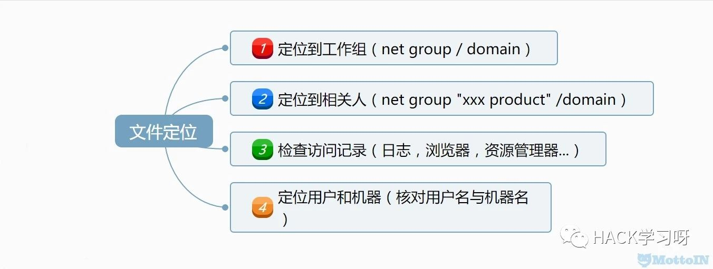
文件定位需要注意的点：
产品名称
内部名称
项目负责人
项目团队
生产部（分公司，工厂，代工厂）
经验
FTP
SMB
DC\NETLOGON\
产品管理系统（仓库管理系统）
各种数据库
其他服务器（分公司，工厂，代工厂）
定位文件服务器请参考上一节定位服务器（机器），定位到文件服务器和某个人，对于文件定位来说应该会事半功倍。这里就不过多叙述了。
参考：
后渗透攻防的信息收集：
http://www.mottoin.com/88117.html
0x04 管理员定位
工具
psloggedon.exe
系统自带工具。通过检验注册表里HKEY_USERS的key值来查询谁登陆过机器，同样也调用到了NetSessionEnum API。某些功能需要管理员权限
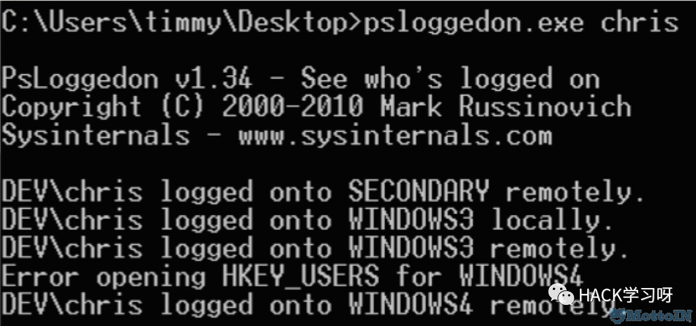
netsess.exe
netsess.exe的原理也是调用NetSessionEnum API，并且在远程主机上无需管理员权限。

PVEFindADUser.exe
用于枚举域用户以及登陆过特定系统的用户，需要管理员权限。工具描述：corelan
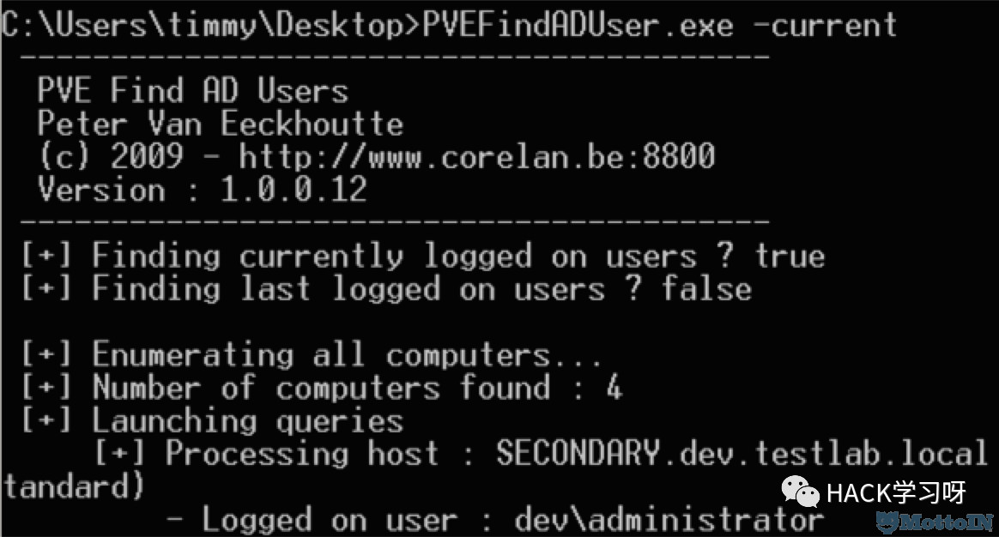
netview.exe
使用WinAPI枚举系统，利用 NetSessionEnum 来找寻登陆sessions, 利用NetShareEnum来找寻共享 , 利用 NetWkstaUserEnum 来枚举登陆的用户。它也能查询共享入口和有价值用户，还能使用延迟和抖动。绝大部分功能不需要管理员权限。
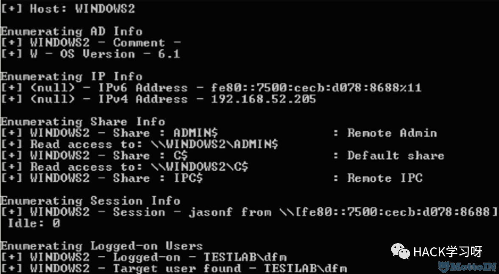
Nmap的Nse脚本
如果你有域账户或者本地账户，你可以使用Nmap的smb-enum-sessions.nse 引擎来获取远程机器的登录session，并且不需要管理员权限。
参考：
nmap加载nse脚本在内网渗透中的使用－上：
http://www.mottoin.com/85401.html
nmap加载nse脚本在内网渗透中的使用－下：
http://www.mottoin.com/85413.html
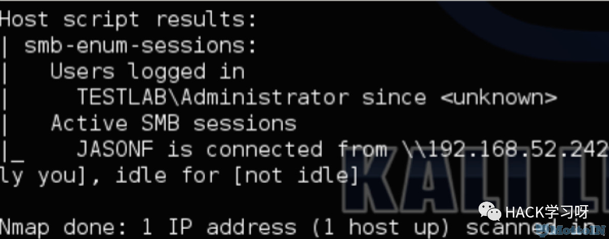
Smbexec&Veil-Pillage
然后Smbexec有个 checkda模块，它可以检测域管进程和域管登陆。Veil-Pillage有它的 user_hunter 和group_hunter 模块，这两个工具都需要管理员权限。
hunter
hunter是一款利用 Windows API 调用来枚举跳板机上的用户登录信息的工具
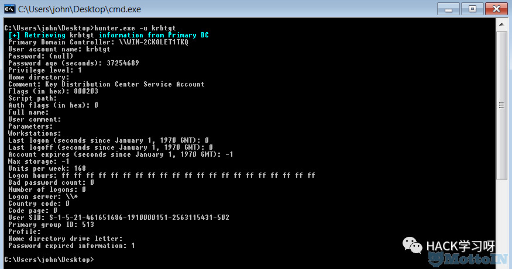
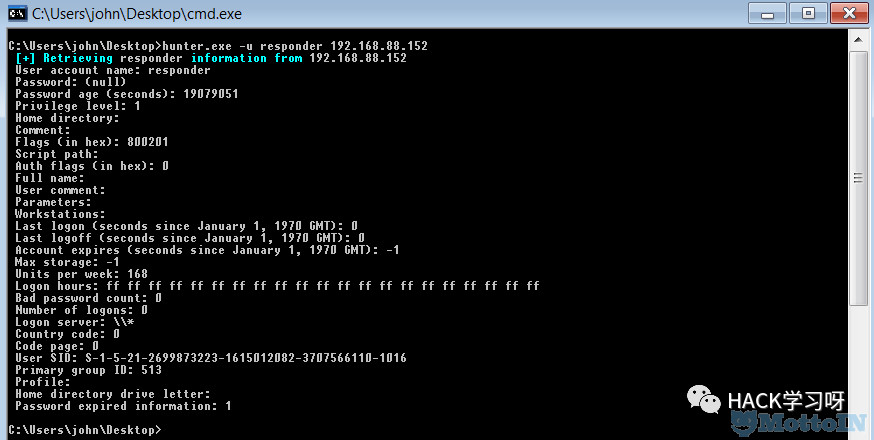
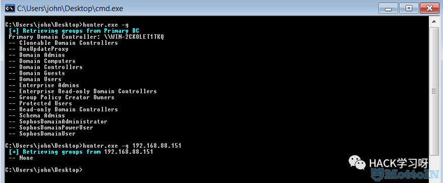
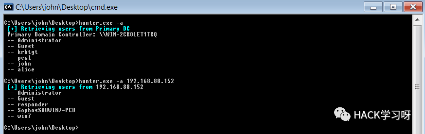
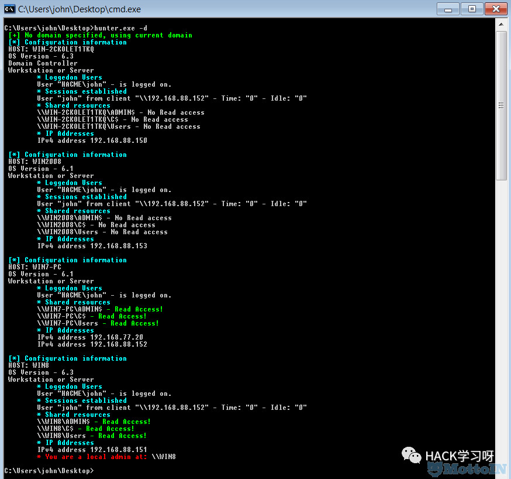
Active Directory
你可以通过AD信息来识别一些连接到服务器的用户
参考：
http://www.harmj0y.net/blog/redteaming/trusts-you-might-have-missed/
http://www.sixdub.net/2014/11/offensive-event-parsing-bringing-home-trophies/
PowerShell
上面也曾提到针对windows机器，可以考虑用wmi脚本和powershell脚本进行扫描，低频扫描可以很容易的绕过IDS的规则。PowerShell有很多方法Windows Api并且绕过白名单。
参考：
通过PowerShell访问Windows Api
http://www.mottoin.com/89568.html
@mattifestation
http://twitter.com/mattifestation
PowerView
PowerView 里面有一些功能可以辅助找寻定位关键用户。要找到目标对应的用户时Get-UserProperties 将会提取所有用户的属性，并且Invoke-UserFieldSearch可以根据通配符来找寻特定用户的相关属性。这可以缩小目标搜索范围。比如说：我们使用这些功能来找Linux管理员组和其相关的成员，就可以追踪和键盘记录他们的putty/ssh会话。
Invoke-UserHunter 功能可以找到域内特定用户群。它支持一个用户名，用户列表，或域组查询，并支持一个主机列表或查询可用的主机域名。它会使用 Get-NetSessions 和Get-NetLoggedon(调用NetSessionEnum和 NetWkstaUserEnum API) 对每个服务器跑一遍而且会比较结果筛选出目标用户集。而且这个工具不需要管理员权限。
命令参考：
Get-NetGroups -> Get-NetGroup
Get-UserProperties -> Get-UserProperty
Invoke-UserFieldSearch -> Find-UserField
Get-NetSessions -> Get-NetSession
Invoke-StealthUserHunter -> Invoke-UserHunter -Stealth
Invoke-UserProcessHunter -> Invoke-ProcessHunter -Username X
Get-NetProcesses -> Get-NetProcess
Get-UserLogonEvents -> Get-UserEvent
Invoke-UserEventHunter -> Invoke-EventHunter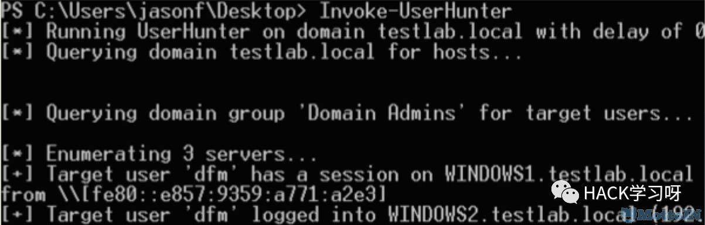
Invoke-StealthUserHunter 只要一个查询就可以获取域内所有用户, 从user.HomeDirectories提取所有用户, 并且会对每个服务器进行Get-NetSessions 获取。无需使用 Invoke-UserHunter对每台机器操作，这个办法的隐蔽性就更高一点，但是涉及到的机器面不一定那么全。
一般默认使用Invoke-StealthUserHunter ，除非找不到我们所需，才会去使用Invoke-UserHunter方法。
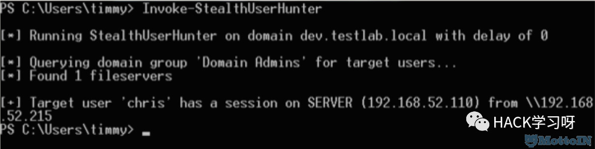
Invoke-UserProcessHunter是PowerView 的新功能。利用Get-NetProcesses cmdlet 来枚举远程机器的tasklists和进程寻找目标用户。这个枚举功能需要管理员权限。
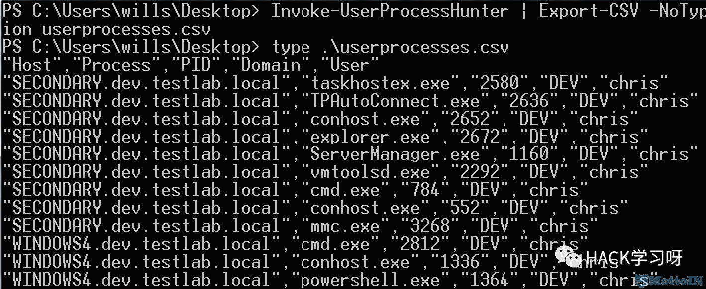
Get-UserLogonEvents cmdlet可以查询查询登录事件（如：ID 4624）远程主机，Invoke-UserEventHunter 查询特定用户在域控上面的登陆日志，需要域管理权限。
参考：
The Diamond Model and Network Based Threat Replication
http://www.sixdub.net/2014/11/offensive-event-parsing-bringing-home-trophies/
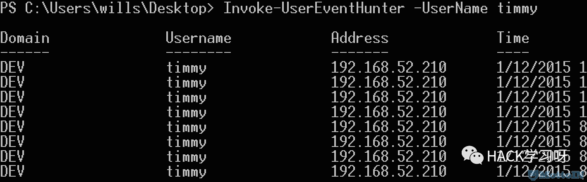
其他一些姿势
内部邮箱
如果你能进某个用户内部邮箱，也可以从邮件头提权有用的信息。找寻跟目标用户来往的邮件，仔细查看邮件头。“X-Originating-IP”头经常会出现，这就可以让你追踪到目标IP。
查找域管进程
Scott Sutherland (@_nullbind) 2012年写了篇查找域管进程的文章。 其中详细讲述了如何使用tasklist和nbtscan的批处理来扫描机器及用户。不过远程tasklist的时候，需要本地管理员权限。
0x05 总结
内网渗透，不是简单的耍流氓的说”可内网渗透”或者“内网漫游”，有着更高更深的责任和需求，有着更多设备和报警及防护软件（如Bit9，惠普ARCsight，Mandiant等等）的突破，有着更多网络拓扑和结构需要清晰洞察，有着更多的域控和域需要占领。 定位到内网管理员或者管理员上过的机器或者定位到文件和某个人，对于内网渗透来说应该会事半功倍。

来源：Mottoin